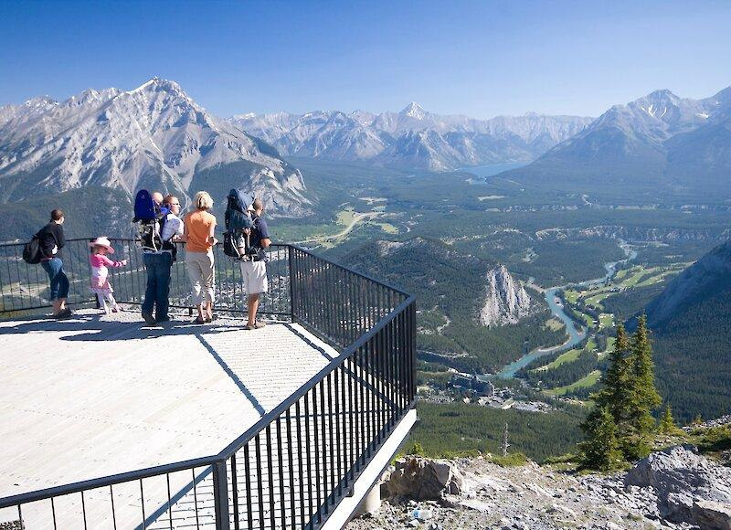

🏔 설퍼산 정상
Sulphur Mountain

📅 우리 일정
Day 2 오후 (밴프 곤돌라)
📏 기본 정보
🚻 편의시설
- ✔ 화장실
- ✔ 카페
- ✔ 레스토랑
- ✔ 기념품샵
- ✔ 전망 데크
🎒 준비물
- 🧥 바람막이
- 👟 편한 운동화
- 🕶 선글라스
- 🧴 자외선 차단제
- 📷 카메라
💡 여행 Tip
- ✔ 정상에 도착하면 전망 데크 끝까지 꼭 걸어가 보세요.
- ✔ 보드워크를 따라 Sanson's Peak까지 왕복하면 약 1km 정도 더 걸을 수 있습니다.
- ✔ 정상은 밴프 시내보다 기온이 낮고 바람이 강하므로 가벼운 바람막이를 준비하세요.
- ✔ 오후 늦게 방문하면 역광이 적어 사진 촬영하기 좋습니다.
📍 Google Maps